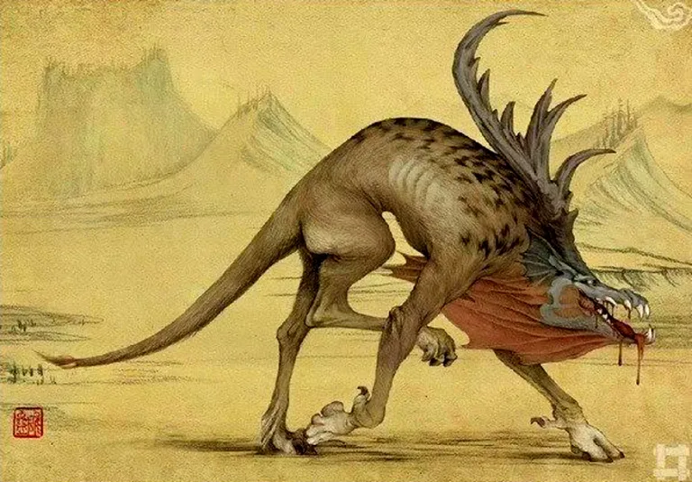

Gudiao
The Gudiao is a fearsome and malevolent creature from folklore, known for its terrifying ability to mimic the sound of a human baby’s cry. This man-eating beast is notorious for its deceptive tactics and predatory nature.
Appearance
The Gudiao is described as a large and menacing beast with several notable features:
- Formidable Size: The Gudiao is typically depicted as a large, imposing creature, often with a bulky and muscular build. Its size makes it a formidable presence in any environment.
- Feral Features: It has a grotesque appearance, with features that are a mix of various predatory animals. Its skin is rough and dark, with sharp claws and fangs that enhance its menacing look.
- Eyes and Face: The Gudiao’s eyes are often described as glowing with a predatory gleam, and its face is distorted, with a mouth full of sharp teeth. Its facial expressions are capable of conveying a sense of malice and hunger.
Abilities
The Gudiao’s primary ability is its deceptive mimicry of a baby’s cry, but it possesses other dangerous traits:
- Baby Cry Mimicry: The Gudiao can perfectly replicate the sound of a human baby’s cry. This ability is used to lure unsuspecting victims into its vicinity, creating a false sense of urgency or need for rescue.
- Enhanced Predatory Skills: The Gudiao has heightened senses and physical strength that aid in hunting and capturing prey. Its agility and stealth make it a dangerous predator in its habitat.
- Intimidation Tactics: Beyond its mimicry, the Gudiao can use its fearsome appearance and growls to intimidate and terrorize other creatures, including humans.
Behavior
The Gudiao exhibits deceptive and aggressive behavior:
- Luring and Ambushing: The Gudiao uses its mimicry to lure victims by imitating the cry of a baby. This tactic is designed to attract those who hear the cry, making them believe that a baby is in distress.
- Aggressive Hunting: Once a victim is close enough, the Gudiao will reveal its true nature and attack with ferocity. It uses its physical strength and predatory skills to overpower and consume its prey.
- Territorial and Solitary: The Gudiao is highly territorial and prefers to hunt alone. It maintains a strong presence in its domain and is highly protective of its territory.
Habitat
The Gudiao is typically found in dark, remote areas, where it can effectively use its mimicry and hunting skills:
- Forested and Isolated Regions: It thrives in dense forests, swamps, or remote regions where it can hide and use its mimicry to lure victims. These habitats provide ample cover and a suitable environment for its predatory activities.
- Areas with Low Human Activity: The Gudiao prefers locations with minimal human presence to reduce the risk of encountering those who might resist its tactics or pose a threat.
Mythology
In folklore, the Gudiao is often seen as a symbol of danger and deception:
- Symbol of False Appearances: The Gudiao’s ability to mimic a baby’s cry represents the theme of deceptive appearances and the dangers of misjudging a situation based on misleading cues.
- Feared Creature: It is often depicted as a creature of terror, used in stories to warn of the dangers lurking in isolated or wilderness areas. The Gudiao embodies the fear of unseen threats and the vulnerability of those who are drawn by false sounds.
- Omen of Misfortune: The presence or cry of a Gudiao is sometimes considered an omen of impending danger or misfortune, reinforcing its role as a harbinger of peril.
Weakness
Despite its terrifying nature, the Gudiao has certain weaknesses:
- Dependence on Deception: The Gudiao relies heavily on its mimicry to lure victims. If its true nature is discovered or if it is confronted before it can execute its ambush, it may be less effective in capturing prey.
- Vulnerability to Light and Noise: As a creature that thrives in darkness and stealth, the Gudiao may be less effective in well-lit or noisy environments where it cannot use its mimicry as effectively.
- Physical Vulnerability: Despite its strength, the Gudiao is not invulnerable. Its reliance on ambush and deception means that direct confrontation, especially with prepared and alert individuals, can be dangerous for it.
Conclusion
The Gudiao is a formidable and frightening creature, known for its man-eating tendencies and its ability to mimic the cry of a human baby. Its deceptive tactics and predatory nature make it a dangerous figure in folklore, embodying the themes of deception and the hidden dangers of the wilderness. While it is a terrifying adversary, understanding its weaknesses can provide opportunities for avoiding or confronting this malevolent beast.
Threat level
For human: 10/10
For other creatures: 5/10